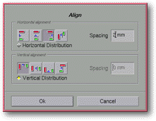

<!-- Documentation Xclamation (c)1994-2000 AXENE contact axene@axene.org>
<html>

<head>
<title>Frame Alignment</title>
</head>

<body BGCOLOR="#FFFFFF" BACKGROUND="Images/back.gif" TEXT="#000000">

<p ALIGN="right">  </p>

<p><br>
<br>
This dialog box precisely aligns selected frames with one another. Alignments can be made
both horizontally and vertically. To open this box, select at least two frames on the
display screen. Each frame can be inscribed in a rectangle whose sides are parallel to the
borders of the page. The left side of the virtual rectangle is called left frame border,
the center of the rectangle frame center, and so forth for right border, top border, and
lower border. <br>
<br>
</p>

<hr>

<p align="center"><br>
 <br>
<small><i>Screen shot: Frame alignment dialog box </i></small></p>

<p><br>
</p>

<hr>

<p><br>
</p>

<h3>The top portion of the dialog box:</h3>

<ul>
  <li><a NAME="halignment_frame">The <i>&quot;Horizontal Alignment&quot;</i> section <b>defines
    the type of horizontal frame</b> alignment. This section contains four choices for the
    axis of horizontal alignment. If no button is engaged, horizontal alignment will not take
    place. Only one of these buttons may be selected at a time. </a><br>
    &nbsp;<ol>
      <li> <a NAME="left_alignment_icon">The first button
        sets frame alignment with respect to the <b>left border</b>. </a><br>
        &nbsp;</li>
      <li> <a NAME="hcenter_alignment_icon">The second
        button sets frame alignment with respect to the vertical axis passing through the <b>center</b>
        of each frame. </a><br>
        &nbsp;</li>
      <li> <a NAME="right_alignment_icon">The third button
        sets frame alignment with respect to the <b>right border</b>. </a><br>
        &nbsp;</li>
      <li> <a NAME="hborder_alignment_icon">The last
        button sets frame alignment from <b>left to right</b> between the borders. This means that
        each frame will have its left border aligned to the right border of the frame just to its
        left. </a><br>
        &nbsp;</li>
      <li><a NAME="hspacing_textfield">The <i>&quot;Spacing&quot;</i> text field <b>sets the
        distance separating frames</b> from one another with respect to their alignment modes.
        This value is expressed in millimeter and must be set between -500(mm) and 500(mm). The
        value is 0 by default, allowing for horizontal frame alignment. This field is gray when
        the <i>&quot;horizontal distribution&quot;</i> button is engaged. </a><br>
        &nbsp;</li>
      <li><a NAME="hdistribution_toggle">The <i>&quot;horizontal distribution&quot;</i> button can
        only be activated if there are at least three frames selected. This command <b>allows for
        horizontal distribution of the frames</b> between the two outermost frames. When this mode
        is activated, the left-most and right-most frames of the selection do not move while the
        space separating their respective alignment axes is distributed evenly between the middle
        frames of the selection. </a><br>
        &nbsp;</li>
    </ol>
  </li>
  <li><a NAME="valignment_frame">The <i>&quot;Vertical Alignment&quot;</i> section <b>selects
    a type of vertical frame alignment</b>. This section contains four choices for the
    vertical alignment axis. If no button is engaged, no vertical alignment will take place.
    Only one of these buttons may be selected at a time. </a><br>
    &nbsp;<ol>
      <li> <a NAME="top_alignment_icon">The first button sets
        the frame alignment with respect to the <b>top border</b>. </a><br>
        &nbsp;</li>
      <li> <a NAME="vcenter_alignment_icon">The second
        button sets the frame alignment with respect to the horizontal axis passing through the <b>center</b>
        of each frame. </a><br>
        &nbsp;</li>
      <li> <a NAME="bottom_alignment_icon">The third
        button sets the frame alignment with respect to the <b>lower border</b>. </a><br>
        &nbsp;</li>
      <li> <a NAME="vborder_alignment_icon">The last
        button sets the frame alignment from <b>top to bottom</b> between the borders, meaning
        each frame's top border will be aligned with the bottom border of the frame located just
        above it. </a><br>
        &nbsp;</li>
      <li><a NAME="vspacing_textfield">The <i>&quot;Spacing&quot;</i> text field <b>defines the
        distance separating frames</b> from one another with respect to their alignment axes. This
        value is expressed in millimeter points and must be set between -500(mm) and 500(mm). The
        value is 0(mm) by default, allowing for vertical frame alignment. This field is gray when
        the <i>&quot;vertical distribution&quot;</i> button is engaged. </a><br>
        &nbsp;</li>
      <li><a NAME="vdistribution_toggle">The <i>&quot;Vertical Distribution&quot;</i> button can
        only be activated if there are at least three frames selected. This command <b>allows for
        vertical distribution of the frames between the two outermost frames</b>. When this mode
        is activated, the highest and lowest frames of the selection do not move while the space
        separating their alignment axes is distributed evenly between the middle frames of the
        selection. </a><br>
        &nbsp;</li>
    </ol>
  </li>
</ul>

<p><br>
</p>

<h3>Lower portion of the dialog box:</h3>

<ul>
  <li><a NAME="button_ok"><i>&quot;Ok&quot;</i> <b>confirms the actions</b> entered in the
    dialog box, closes the box, then aligns the frames according to its commands. </a><br>
    &nbsp;</li>
  <li><a NAME="button_cancel"><i>&quot;Cancel&quot;</i> <b>cancels all alignment operations</b>
    and closes the dialog box. </a><br>
    &nbsp;</li>
</ul>

<p><br>
</p>

<hr>

<p ALIGN="right"></p>
</body>
</html>
